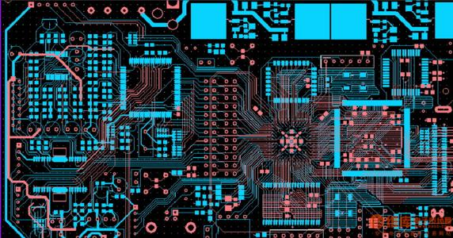

接 拿走不谢！268条PCB Layout设计规范（上）

| 序号 | 按部位分类 | 技术规范内容 |
| 97 | PCB布线与布局 | 元件布局时，使用同一种电源的元件应考虑尽量放在一起，以便于将来的电源分割。 |
| 98 | PCB布线与布局 | 用于阻抗匹配目的的阻容器件的放置，应根据其属性合理布局。 |
| 99 | PCB布线与布局 | 匹配电容电阻的布局 要分清楚其用法，对于多负载的终端匹配一定要放在信号的最远端进行匹配。 |
| 100 | PCB布线与布局 | 匹配电阻布局时候要靠近该信号的驱动端，距离一般不超过500mil。 |
| 101 | PCB布线与布局 | 调整字符，所有字符不可以上盘，要保证装配以后还可以清晰看到字符信息，所有字符在X或Y方向上应一致。字符、丝印大小要统一。 |
| 102 | PCB布线与布局 | 关键信号线优先：电源、模拟小信号、高速信号、时钟信号和同步信号等关键信号优先布线； |
| 103 | PCB布线与布局 | 环路最小规则：即信号线与其回路构成的环面积要尽可能小，环面积要尽可能小，环面积越小，对外的辐射越少，接收外界的干扰也越小。在双层板设计中，在为电源留下足够空间的情况下，应该将留下的部分用参考地填充，且增加一些必要的过孔，将双面信号有效连接起来，对一些关键信号尽量采用地线隔离，对一些频率较高的设计，需特别考虑其他平面信号回路问题，建议采用多层板为宜。 |
| 104 | PCB布线与布局 | 接地引线最短准则：尽量缩短并加粗接地引线（尤其高频电路）。对于在不同电平上工作的电路，不可用长的公共接地线。 |
| 105 | PCB布线与布局 | 内部电路如果要与金属外壳相连时，要用单点接地，防止放电电流流过内部电路 |
| 106 | PCB布线与布局 | 对电磁干扰敏感的部件需加屏蔽，使之与能产生电磁干扰的部件或线路相隔离。如果这种线路必须从部件旁经过时，应使用它们成90°交角。 |
| 107 | PCB布线与布局 | 布线层应安排与整块金属平面相邻。这样的安排是为了产生通量对消作用 |
| 108 | PCB布线与布局 | 在接地点之间构成许多回路，这些回路的直径（或接地点间距）应小于最高频率波长的1/20 |
| 109 | PCB布线与布局 | 单面或双面板的电源线和地线应尽可能靠近，最好的方法是电源线布在印制板的一面，而地线布在印制板的另一面，上下重合，这会使电源的阻抗为最低 |
| 110 | PCB布线与布局 | 信号走线（特别是高频信号）要尽量短 |
| 111 | PCB布线与布局 | 两导体之间的距离要符合电气安全设计规范的规定，电压差不得超过它们之间空气和绝缘介质的击穿电压，否则会产生电弧。在0.7ns到10ns的时间里，电弧电流会达到几十A，有时甚至会超过100安培。电弧将一直维持直到两个导体接触短路或者电流低到不能维持电弧为止。可能产生尖峰电弧的实例有手或金属物体，设计时注意识别。 |
| 112 | PCB布线与布局 | 紧靠双面板的位置处增加一个地平面，在最短间距处将该地平面连接到电路上的接地点。 |
| 113 | PCB布线与布局 | 确保每个电缆进入点离机箱地的距离在40mm(1.6英寸)以内。 |
| 114 | PCB布线与布局 | 将连接器外壳和金属开关外壳都连接到机箱地上。 |
| 115 | PCB布线与布局 | 在薄膜键盘周围放置宽的导电保护环，将环的外围连接到金属机箱上，或至少在四个拐角处连接到金属机箱上。不要将该保护环与PCB地连接在一起。 |
| 116 | PCB布线与布局 | 使用多层PCB：相对于双面PCB而言，地平面和电源平面以及排列紧密的信号线-地线间距能够减小共模阻抗(common impedance)和感性耦合，使之达到双面PCB的1/10到1/100。尽量地将每一个信号层都紧靠一个电源层或地线层。 |
| 117 | PCB布线与布局 | 对于顶层和底层表面都有元器件、具有很短连接线以及许多填充地的高密度PCB，可使用内层线。大多数的信号线以及电源和地平面都在内层上，因而类似于具备屏蔽功能的法拉第盒。 |
| 118 | PCB布线与布局 | 尽可能将所有连接器都放在电路板一侧。 |
| 119 | PCB布线与布局 | 在引向机箱外的连接器(容易直接被ESD击中)下方的所有PCB层上，放置宽的机箱地或者多边形填充地，并每隔大约13mm的距离用过孔将它们连接在一起。 |
| 120 | PCB布线与布局 | PCB装配时，不要在顶层或者底层的安装孔焊盘上涂覆任何焊料。使用具有内嵌垫圈的螺钉来实现PCB与金属机箱/屏蔽层或接地面上支架的紧密接触。 |
| 121 | PCB布线与布局 | 在每一层的机箱地和电路地之间，要设置相同的“隔离区”；如果可能，保持间隔距离为0.64mm(0.025英寸)。 |
| 122 | PCB布线与布局 | 电路周围设置一个环形地防范ESD干扰：1在电路板整个四周放上环形地通路；2所有层的环形地宽度>2.5mm (0.1英寸)；3每隔13mm(0.5英寸)用过孔将环形地连接起来；4将环形地与多层电路的公共地连接到一起；5对安装在金属机箱或者屏蔽装置里的双面板来说，应该将环形地与电路公共地连接起来；6不屏蔽的双面电路则将环形地连接到机箱地，环形地上不涂阻焊剂，以便该环形地可以充当ESD的放电棒，在环形地(所有层)上的某个位置处至少放置一个0.5mm宽(0.020英寸)的间隙，避免形成大的地环路；7如果电路板不会放入金属机箱或者屏蔽装置中，在电路板的顶层和底层机箱地线上不能涂阻焊剂，这样它们可以作为ESD电弧的放电棒。 |
| 123 | PCB布线与布局 | 在能被ESD直接击中的区域，每一个信号线附近都要布一条地线。 |
| 124 | PCB布线与布局 | 易受ESD影响的电路，放在PCB中间的区域，减少被触摸的可能性。 |
| 125 | PCB布线与布局 | 信号线的长度大于300mm(12英寸)时，一定要平行布一条地线。 |
| 126 | PCB布线与布局 | 安装孔的连接准则：可以与电路公共地连接，或者与之隔离。1金属支架必须和金属屏蔽装置或者机箱一起使用时，要采用一个0Ω电阻实现连接。2.确定安装孔大小来实现金属或者塑料支架的可靠安装，在安装孔顶层和底层上要采用大焊盘，底层焊盘上不能采用阻焊剂，并确保底层焊盘不采用波峰焊工艺焊接。 |
| 127 | PCB布线与布局 | 受保护的信号线和不受保护的信号线禁止并行排列。 |
| 128 | PCB布线与布局 | 复位、中断和控制信号线的布线准则：1采用高频滤波；2远离输入和输出电路；3远离电路板边缘。 |
| 129 | PCB布线与布局 | 机箱内的电路板不安装在开口位置或者内部接缝处。 |
| 130 | PCB布线与布局 | 对静电最敏感的电路板放在最中间，人工不易接触到的部位；将对静电敏感的器件放在电路板最中间，人工不易接触到的部位。 |
| 131 | PCB布线与布局 | 两块金属块之间的邦定（binding）准则：1固体邦定带优于编织邦定带；2邦定处不潮湿不积水；3使用多个导体将机箱内所有电路板的地平面或地网格连接在一起；4确保邦定点和垫圈的宽度大于5mm。 |
| 132 | 电路设计 | 信号滤波腿耦：对每个模拟放大器电源，必需在最接近电路的连接处到放大器之间加去耦电容器。对数字集成电路，分组加去耦电容器。在马达与发电机的电刷上安装电容器旁路，在每个绕组支路上串联R-C滤波器，在电源入口处加低通滤波等措施抑制干扰。安装滤波器应尽量靠近被滤波的设备，用短的，加屏蔽的引线作耦合媒介。所有滤波器都须加屏蔽，输入引线与输出引线之间应隔离。 |
| 133 | 电路设计 | 各功能单板对电源的电压波动范围、纹波、噪声、负载调整率等方面的要求予以明确，二次电源经传输到达功能单板时要满足上述要求 |
| 134 | 电路设计 | 将具有辐射源特征的电路装在金属屏蔽内，使其瞬变干扰最小。 |
| 135 | 电路设计 | 在电缆入口处增加保护器件 |
| 136 | 电路设计 | 每个IC的电源管脚要加旁路电容（一般为104）和平滑电容(10uF~100uF)到地，大面积IC每个角的电源管脚也要加旁路电容和平滑电容 |
| 137 | 电路设计 | 滤波器选型的阻抗失配准则：对低阻抗噪声源，滤波器需为高阻抗（大的串联电感）；对高阻抗噪声源，滤波器就需为低阻抗（大的并联电容） |
| 138 | 电路设计 | 电容器外壳、辅助引出端子与正、负极以及电路板间必须完全隔离 |
| 139 | 电路设计 | 滤波连接器必须良好接地，金属壳滤波器采用面接地。 |
| 140 | 电路设计 | 滤波连接器的所有针都要滤波 |
| 141 | 电路设计 | 沿和下降沿所决定的频带宽而不是数字脉冲的重复频率。方形数字信号的印制板设计带宽定为1／πtr，通常要考虑这个带宽的十倍频 |
| 142 | 电路设计 | 用R－S触发器作设备控制按钮与设备电子线路之间配合的缓冲 |
| 143 | 电路设计 | 降低敏感线路的输入阻抗有效减少引入干扰的可能性。 |
| 144 | 电路设计 | LC滤波器 在低输出阻抗电源和高阻抗数字电路之间，需要LC滤波器，以保证回路的阻抗匹配 |
| 145 | 电路设计 | 电压校准电路：在输入输出端，要加上去耦电容（比如0.1μF），旁路电容选值遵循10μF/A的标准。 |
| 146 | 电路设计 | 频能量则会导致EMI问题。此时，需要考虑采用信号端接。 信号端接有以下几种：串联/源端接、并联端接、 RC端接、Thevenin端接、二极管端接。 |
| 147 | 电路设计 | MCU电路： I/O引脚：空置的I/O引脚要连接高阻抗以便减少供电电流。且避免浮动。 IRQ引脚：在IRQ引脚要有预防静电释放的措施。比如采用双向二极管、Transorbs或金属氧化变阻器等。 复位引脚：复位引脚要有时间延时。以免上电初期MCU即被复位。 振荡器：在满足要求情况下，MCU使用的时钟振荡频率越低越好。 让时钟电路、校准电路和去耦电路接近MCU放置 |
| 148 | 电路设计 | 小于10个输出的小规模集成电路，工作频率≤50MHZ时，至少配接一个0.1uf的滤波电容。工作频率≥50MHZ时，每个电源引脚配接一个0.1uf的滤波电容； |
| 149 | 电路设计 | 对于中大规模集成电路，每个电源引脚配接一个0.1uf的滤波电容。对电源引脚冗余量较大的电路也可按输出引脚的个数计算配接电容的个数，每5个输出配接一个0.1uf滤波电容。 |
| 150 | 电路设计 | 对无有源器件的区域，每6cm2至少配接一个0.1uf的滤波电容 |
| 151 | 电路设计 | 对于超高频电路，每个电源引脚配接一个1000pf的滤波电容。对电源引脚冗余量较大的电路也可按输出引脚的个数计算配接电容的个数，每5个输出配接一个1000pf的滤波电容 |
| 152 | 电路设计 | 高频电容应尽可能靠近IC电路的电源引脚处。 |
| 153 | 电路设计 | 每5只高频滤波电容至少配接一只一个0.1uf滤波电容； |
| 154 | 电路设计 | 每5只10uf至少配接两只47uf低频的滤波电容； |
| 155 | 电路设计 | 每100cm2范围内，至少配接1只220uf或470uf低频滤波电容； |
| 156 | 电路设计 | 每个模块电源出口周围应至少配置2只220uf或470uf电容，如空间允许，应适当增加电容的配置数量； |
| 157 | 电路设计 | 脉冲与变压器隔离准则：脉冲网络和变压器须隔离，变压器只能与去耦脉冲网络连接，且连接线最短。 |
| 158 | 电路设计 | 在开关和闭合器的开闭过程中，为防止电弧干扰，可以接入简单的RC网络、电感性网络，并在这些电路中加入一高阻、整流器或负载电阻之类，如果还不行，就将输入和载出引线进行屏蔽。此外，还可以在这些电路中接入穿心电容。 |
| 159 | 电路设计 | 退耦、滤波电容须按照高频等效电路图来分析其作用。 |
| 160 | 电路设计 | 各功能单板电源引进处要采用合适的滤波电路，尽可能同时滤除差模噪声和共模噪声，噪声泄放地与工作地特别是信号地要分开，可考虑使用保护地；集成电路的电源输入端要布置去耦电容，以提高抗干扰能力 |
| 161 | 电路设计 | 明确各单板最高工作频率，对工作频率在160MHz（或200 MHz）以上的器件或部件采取必要的屏蔽措施，以降低其辐射干扰水平和提高抗辐射干扰的能力 |
| 162 | 电路设计 | 如有可能在控制线（于印刷板上）的入口处加接R-C去耦，以便消除传输中可能出现的干扰因素。 |
| 163 | 电路设计 | 用R-S触发器做按钮与电子线路之间配合的缓冲 |
| 164 | 电路设计 | 在次级整流回路中使用快恢复二极管或在二极管上并联聚酯薄膜电容器 |
| 165 | 电路设计 | 对晶体管开关波形进行“修整” |
| 166 | 电路设计 | 降低敏感线路的输入阻抗 |
| 167 | 电路设计 | 如有可能在敏感电路采用平衡线路作输入，利用平衡线路固有的共模抑制能力克服干扰源对敏感线路的干扰 |
| 168 | 电路设计 | 将负载直接接地的方式是不合适 |
| 169 | 电路设计 | 注意在IC近端的电源和地之间加旁路去耦电容（一般为104） |
| 170 | 电路设计 | 如有可能，敏感电路采用平衡线路作输入，平衡线路不接地 |
| 171 | 电路设计 | 继电器线圈增加续流二极管，消除断开线圈时产生的反电动势干扰。仅加 续流二极管会使继电器的断开时间滞后，增加稳压二极管后继电器在单位时间内可 动作更多的次数 |
| 172 | 电路设计 | 在继电器接点两端并接火花抑制电路（一般是RC串联电路，电阻一般选几K 到几十K，电容选0.01uF），减小电火花影响 |
| 173 | 电路设计 | 给电机加滤波电路，注意电容、电感引线要尽量短 |
| 174 | 电路设计 | 电路板上每个IC要并接一个0.01μF～0.1μF高频电容，以减小IC对电源的 影响。注意高频电容的布线，连线应靠近电源端并尽量粗短，否则，等于增大了电 容的等效串联电阻，会影响滤波效果 |
| 175 | 电路设计 | 可控硅两端并接RC抑制电路，减小可控硅产生的噪声（这个噪声严重时可能 会把可控硅击穿的） |
| 176 | 电路设计 | 许多单片机对电源噪声很敏感,要给单片机电源加滤波电路 或稳压器，以减小电源噪声对单片机的干扰。比如，可以利用磁珠和电容 组成π形滤波电路，当然条件要求不高时也可用100Ω电阻代替磁珠 |
| 177 | 电路设计 | 如果单片机的I/O口用来控制电机等噪声器件，在I/O口与噪声源之 间应加隔离（增加π形滤波电路）。 控制电机等噪声器件，在I/O口与噪声源之 间应加隔离（增加π形滤波电路）。 |
| 178 | 电路设计 | 在单片机I/O口，电源线，电路板连接线等关键地方使用抗干扰元件 如磁珠、磁环、电源滤波器，屏蔽罩，可显著提高电路的抗干扰性能 |
| 179 | 电路设计 | 对于单片机闲置的I/O口，不要悬空，要接地或接电源。其它IC的闲置 端在不改变系统逻辑的情况下接地或接电源 |
| 180 | 电路设计 | 对单片机使用电源监控及看门狗电路，如：IMP809，IMP706，IMP813， X25043，X25045等，可大幅度提高整个电路的抗干扰性能。 |